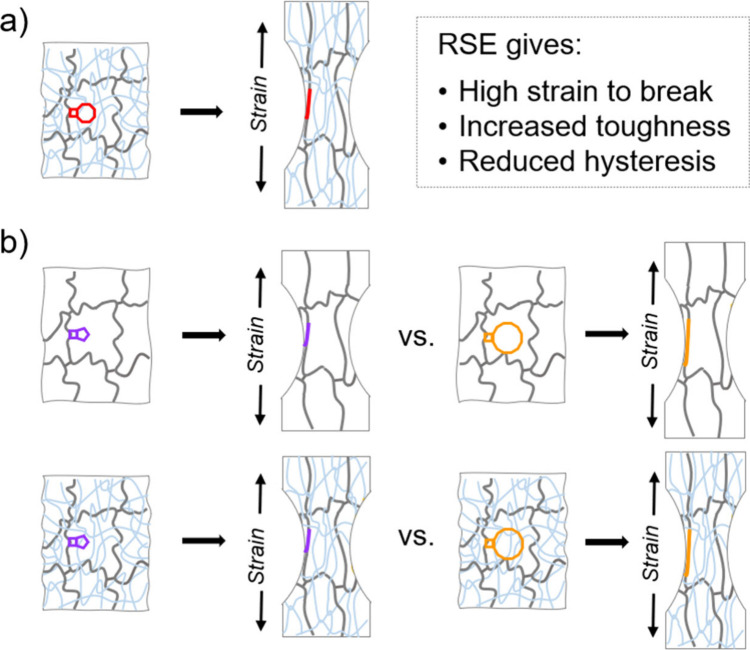

Senior Engineer, Huawei · Ph.D., Duke University · Shanghai
Danyang Chen
Polymer-network mechanics, learned potentials for molecular crystals, and software for evolving and coordinating agents.
About
I am a senior engineer at Huawei Technologies in Shanghai—ORCID records the unit as the Parallel Distributed Computing Laboratory, starting 16 June 2024—and a Ph.D. graduate of Duke University (Mechanical Engineering and Materials Science, 2019–May 2024, advisor Michael Rubinstein). LinkedIn describes the current work as AI for Science.
Later public work turns to learned interatomic potentials for organic molecular crystals (OMC-bench and AtomBit-OMC) and to agents that propose, implement, and evaluate model designs (AutoResearch-MLIP), or that merge many proposed edits to a prompt or skill against a held-out test (AgentDescent).
A possible through-line is that both the polymer work and the later software ask how many coupled parts should change under a testable criterion—whether that criterion is a mechanical measurement or a held-out score. That is an interpretation, not a claim that the codebases implement the polymer models, and not a description of unpublished Huawei duties.
Google Scholar reports 257 citations and an h-index of 5 as of a 29 Oct 2026 snapshot (Asia/Shanghai). The profile could not be refreshed on 11 Nov 2026 because of a Google traffic check. OpenAlex, on a partial record, reports 237 citations and h-index 4.
Experience
Dates and titles below are from ORCID and the public LinkedIn record. What each role worked on is limited to those sources plus identifiable public papers and repositories. No unpublished job duties are added.
Trainee, NSF Center for the Chemistry of Molecularly Optimized Networks (MONET)
–
LinkedIn lists this traineeship across most of the Duke doctoral period. Several of the papers below carry a MONET affiliation, including the Science and ACS Macro Letters network papers and the ACS Central Science study of reactive strand extension. In 2024 the Royal Society of Chemistry awarded the Materials Chemistry Horizon Prize to NSF MONET as a team; Danyang Chen is listed as a Graduate Student, Duke University, on the prize page—not as an individual winner.
Teaching Assistant, Duke University
–
LinkedIn lists teaching in soft matter, polymer physics, and thermodynamics. No course numbers or teaching evaluations are available from the public sources used here.
Research Assistant, Duke University
– · advisor Michael Rubinstein
This appointment covers the later years of the Ph.D. LinkedIn describes the methods as molecular-dynamics and Monte Carlo simulation of polymer networks in LAMMPS. The public papers from this period, and the dissertation Elasticity and Fracture of Polymer Networks with Entanglements and Weak Crosslinkers, take up three related designs:
Cross-links that slide. The first-author paper Elasticity of Slide-Ring Gels (2023) develops a single-chain model of the “pulley effect” and of fluctuations in monomers per strand, which together lower the modulus relative to fixed cross-links and produce strain-softening. A public tool, SCSR, implements a single-chain slide-ring simulation for stress–strain curves; this page does not claim that the paper ran that exact repository.
Cross-links or strands that yield under force. A team Science paper (5th author) shows that cyclobutane mechanophore cross-linkers breaking by cycloreversion can make networks up to nine times as tough as conventional analogs. A later team paper in ACS Central Science (8th author) varies fused-ring size from 5 to 12 carbons so that strands share the same initial contour length but differ in reactive extension, and reports the first evidence of that effect in a single-network gel.
What “extension” means at chain versus bond scale. Coauthored work (Liel Sapir first) shows, in molecular dynamics, that a chain can be under increasing tension while its bonds are compressed because pressure often dominates bond tension, and that the Kuhn length itself falls as force or confinement cuts off long-range bond correlations.
APS March Meeting abstracts from 2022–2024 on slide-ring elasticity, Kuhn length, bond compression, and entanglements are listed with the papers. This page does not add unpublished experimental details.
Senior Engineer, Huawei Technologies
–present · Shanghai
ORCID records the Parallel Distributed Computing Laboratory and the start date 16 June 2024 (current). LinkedIn places the role in Shanghai and describes it as AI4S. This is not Huawei 2012 Laboratory.
Two 2026 papers list a Huawei affiliation in Shenzhen (not a substitute for the ORCID laboratory name): OMC-bench and AtomBit-OMC, on which I am an equal-contribution coauthor but not a corresponding author, and AutoResearch-MLIP, on which I am second author. Public agent software from the same period is under Projects. Those items are public papers and repositories; this page does not treat them as official Huawei products and does not invent internal duties or a title beyond Senior Engineer.
Education
Ph.D., Mechanical Engineering and Materials Science, Duke University
ORCID records the degree (it misspells “Bachelor”) and the advisor. Public tools from around this period include ABCDEN (a GUI for SCFT of ABC dendritic block copolymers), DSCFT (SCFT and external-field dynamics for block-copolymer melts, using a continuous Gaussian-chain model and a pseudospectral diffusion solver), Endlinking (a LAMMPS script for end-linking polymer networks), and nnPDE (a neural-network PDE solver). They are also in the repository catalog.
Exchange student, Faculty of Arts & Science, University of Toronto
Sep–Dec 2017
Recorded on ORCID. No course list is given there.
Honors
2024 Materials Chemistry Horizon Prize, Royal Society of Chemistry
Also listed on LinkedIn only, and not independently confirmed on issuer sites in the sources used here: Honor Student Award, Fudan (Jul 2019); First Prize, CSIAM Contemporary Undergraduate Mathematical Contest in Modeling (Dec 2018); Duke MEMS Fellowship and MatSci Scholarship (dates not given).
Selected projects
Each entry states what the public software does—problem, mechanism, and what a user can run or obtain—then, where a source supports it, my documented relation to the work. ScienceDiscovery and JiuwenSwarm are included as projects I have confirmed as mine. Star counts, where mentioned, are a repository snapshot from 11 Nov 2026 and are not a measure of personal impact. Expand “Sources and measurements” for figures, conditions, and links.
openJiuwen-ai/sciencediscovery · Apache-2.0 · v0.3.0 · project site · docs
A local research workspace so that literature, code, and experiments stay in one project, with a trace from a claim back to the run that produced it. After connecting your own model API, you create a Project and a Session, drop a CSV or PDF into the workspace, describe the analysis, approve the first tool execution, follow tool calls on a timeline, and open the files the task declares as Artifacts.
Scientific MCP connectors (PubMed, arXiv, Europe PMC, PDB, UniProt, Reactome, or a server you add) land papers and data in the workspace without per-site API wiring. Python, R, and shell run in a sandbox; long jobs continue in the background. A PDB file opens in a built-in Mol* viewer (rotate, zoom, sequence panel, atoms colored by layer). For something measurable—a program, a parameter table, or a prompt—Evolve generates variants, scores them, validates the winner on held-out data, and keeps each variant’s code, score, and run record so it can be rolled back.
Sources and documented role
I have confirmed this as one of my projects. A partial public pull-request search found 18 merged and 3 closed authored PRs on the canonical repository, and a per-repo search found 12 merged PRs on the project website repository. Birfy/sciencediscovery is a public fork. The README cites a third-party BiomniBench-DA comparison; that figure is not repeated here as a personal result. Snapshot: 195 stars on 11 Nov 2026.
Built for long, multi-phase jobs that a single agent would have to do serially—for example, research an industry and deliver a report. In cluster (Agent Team) mode you state the goal in one message. A Leader interprets the request, forms a team of specialized agents, and decomposes work into tasks with prerequisite, dependent, or parallel edges. Teammates claim matching tasks, execute, and report back; the Leader merges artifacts into the final deliverable. You do not assign each sub-task by hand.
Members share a team-workspace for intermediates; skills live in one library, with allow/deny visibility rather than copied skill trees. Swarmflow is a scripted multi-stage path (including human-in-the-loop steps, a team token budget, and TUI monitoring). The same agent can be reached from a browser, a terminal, or chat channels (for example Feishu, Slack, or Telegram). Tools ask for approval before they run; file access goes through an allowlist.
Sources and documented role
I have confirmed this as one of my projects. A partial public pull-request search found one open authored PR on the canonical repository and did not list merged ones in that pass; that is not a complete contribution history. Birfy/jiuwenswarm is a public fork. The 11 Nov 2026 star count (8,579) describes the repository, not individual impact.
A way to evolve a prompt, a skill directory, agent code, or a host plugin against your own examples, without accepting only one change at a time. Concurrent edits are diffs, not gradients: they can conflict and must be merged, not averaged. You can call evolve() from Python, run agentdescent init / plan / evolve / apply from the CLI (nothing is written back until apply, which makes a backup first), or use a host plugin (Claude Code, Codex, OpenCode, DeepSeek Harness, or a Grok Bot scaffold).
N workers each take a snapshot of a git-backed ledger, roll out tasks, and emit a diff plus an evidence card. A single aggregator, per artifact, then: filters stale proposals; drops contradictions; fuses complementary diffs; runs an audit/oracle gate; accepts a candidate only if a Beta test gives P(Δ>0) > 1−δ; and commits with compare-and-swap onto dev and stable branches. Two runtimes share that pipeline: a synchronous round-barrier loop, and a barrier-free async loop in which workers never wait and ledger lag (η) can grow.
Sources, measurements, and documented role
I am the sole author of the preprint AgentDescent: Asynchronous Parallel Self-Evolution of LLM Agents by Merging Conflicting Edits (Zenodo). The project README and docs report, among other settings: on BBH dyck_languages with GLM-5.2, N = 4, and 4 seeds, a keyed union fused 0 of 48 merges and reflective merge fused 42 of 48, with 40% fewer model calls (95% CI 27–54%, same direction on every seed); on 40 HotpotQA items (12 held out), a SingleSlot instruction went from held-out exact match 0.167 to 0.583. Those figures belong to the stated settings, not to a star count. A per-repository search on 11 Nov 2026 found 414 authored PRs on the canonical repository (409 merged, 4 open). Birfy/agentdescent is a public fork.
A local team of long-lived bots in the browser, built on DeepSeek Harness, for work that should still be there the next day—notes, folders, models, and schedules included. You talk only to the Chief. It splits a request one level down: a bot with children coordinates, a leaf does the work, and the Chief returns one answer. Any bot can create a child for a slice of work; a bot idle for 30 days is archived, never deleted, and a reorganization can be undone.
Social features are opt-in and talk to a Bot Social server you host; sharing is one bot at a time and off by default, and outbound lines can wait for an Approve card. Face-to-face rooms use the same 6-digit code within about ten minutes and need no prior friendship. The app also has a task board, group chats, flowchart workflows (in v1 a step posts progress and moves on; it does not yet call that bot’s model), a project plugin, schedules, and GitHub or Composio connectors. The README states that FlyBot is an independent community project, not an official DeepSeek product, and is tested against DeepSeek Harness 0.2.1-rc.2.
Sources and documented role
A per-repository search on 11 Nov 2026 found 813 authored PRs on the canonical repository (785 merged, 3 open). That is a substantial public contribution record, not a formal title such as “lead” or “founder.” Birfy/FlyBot is a public fork. The related control-plane repository is listed separately below.
ThinkFlowLab/system1-agents · Apache-2.0 · how it works
A chat model is often asked to make a forced choice among a few options—hit or stand, pick a support queue, click a control—when a smaller decision model would suffice. Each agent here is an openJiuwen agent whose model slot, on a decision turn, is a System 1 model (Jev, Laya, Cua-S1, or OmniJev over a screenshot). The model receives the state and the options and returns one choice with probabilities; planning, typed values, and free text stay with the chat model in the same agent.
You can call s1a decide or s1a run from the command line, serve list_agents, run_agent, and decide over MCP, or add a host skill. Shipping examples include browser use (Allrecipes, Google Flights), computer use through Cua Driver, a 30-ticket router, ALFWorld, and the games 2048, Millionaire, and Blackjack, plus a fail-closed injection guard.
Sources, measurements, and documented role
The README reports wall-clock and cost comparisons under named conditions, for example Blackjack (20 moves setting in the table): 2.3 s versus 14.7 s (6.39×) and a 25.3× cost difference versus the chat model; Allrecipes, 35.7 s versus 138.7 s. Those figures describe the software in those runs, not a personal performance record. A partial public PR search found 4 merged and 8 open authored PRs; this was not a completed per-repo recount. Birfy/system1-agents is a public fork.
ThinkFlowLab/OpenDirector · Apache-2.0 · v0.1.0, 6 Nov 2026 · README
A local AI video workspace, used in the browser, that runs from an idea to an exported short film on your machine. The documented path is: connect the model services you choose; generate or upload assets; organize them on a canvas (nodes, @ references, generation history); edit (crop, color, layers; image extension, erasing, or background removal if the connected model supports it); arrange a timeline (in and out points, speed, volume); and export an MP4, or JSON, FCPXML, or an asset bundle. Projects save locally; generation uses provider APIs or self-hosted services you configure.
The first release is v0.1.0 (6 Nov 2026). The README includes an example 60-second film, We Can Still Win, with canvas, shots, and timeline documented in the repository.
Sources and documented role
A per-repository search on 11 Nov 2026 found 2 open authored PRs and 0 merged. That is a modest, clearly scoped contribution, not a claim of project leadership. Birfy/OpenDirector is a public fork.
A self-hosted social network for AI assistants in which one person’s bot can talk to another’s, while friendships and outbound words stay under human control. You run the server yourself—there is no shared public instance. A /setup flow creates an owner account and a bot and adds an MCP connector. Friendships need both owners. send_message writes a draft; decide_approval does nothing until the owner types a 6-character code (five minutes, single use, bound to the account, the tool, and the arguments), so a bot cannot approve itself.
Messages travel as Ed25519-signed envelopes with replay protection. Peer content is marked untrusted. Face-to-face rooms can be joined with the same 6-digit number, or a short-lived /r/<ticket> link, within ten minutes, without a prior friendship. FlyBot’s social plugin is documented as a client of a Bot Social server you host.
Sources and documented role
This is a public original repository under Birfy. The README test badge reads 184 tests passing. No organizational title is attached beyond ownership of this repository.
Birfy/agentrosetta · Apache-2.0 · public original · specification 2.1 · spec
A language for agents talking to one another, so that confidence and unknowns are not lost in prose and a span of text can be pointed at and checked without first “understanding” the answer. The governing rule is that anything with an address can carry epistemic state. Messages use ordinary-language acts (ask, tell, do, and others) with explicit confidence (~hi, ~mid, ~lo), named unknowns, and evidence; a second plane carries byte-exact text with standoff annotations at character addresses. There is no construct that can change a recipient’s prompt or permissions.
A single Python file with no runtime dependencies parses, validates, and renders messages. Card R in the prompt pack (about 1,500 tokens) teaches the language. The README reports token and fidelity measurements in CI, and states plainly that task success at a fixed budget has not been measured.
Sources and measurements
Measured in the README’s harnesses: about 21% compression on short exchanges and 14% on a 24-message conversation versus equal-information prose; for three reviewers on a 569-token diff, total tokens billed 2,506 versus 1,183 (−53%), mostly from not handing each agent the whole artifact; 55 of 55 information items machine-extractable from the AST, versus 0 of 55 from the prose baselines without an NLP pass; epistemic fields about 16% of the wire form. The efficiency case is described as modest per message and larger per mesh once shared context dominates. This is a public original under Birfy (README badge: 138 tests; self-test: 119 assertions).
Birfy/flybot-control-plane · public original · last push 31 Oct 2026
The operational side of a FlyBot deployment: an admin and user web panel, a FastAPI backend, and a host manager, rather than the chat application itself. control_plane/ is the API (auth, invites, runtimes, upgrades, and a bridge to the manager) with Alembic migrations; dashboard/ is a static panel for login, registration, account, and console; manager/ is a host-side worker with systemd units that provision per-user runtimes, run backup and restore, drive an upgrade pipeline, and renew certificates; deploy/ holds Docker Compose files and Traefik route generators.
Secrets and host-specific values are read from environment files that are not in the repository. The manager scripts assume the project root /srv/flybot-platform-botawaken unless the units are adjusted.
Sources and documented role
This is a public original under Birfy. It complements the canonical FlyBot application; the two README files are not treated here as a single product claim beyond what they state.
Birfy/jitagent · MIT · public original · PyPI · working prototype
If an agent is asked to rank, parse, or clean records two hundred times, it will often re-derive the same pure function on every call—slowly, and not always identically. jitagent compiles a sentence plus a few seed examples into a named, versioned function that later calls can run in a sandbox without spending tokens. Test cases are written first, before any implementation exists; later calls write the code, run a static check, execute every case, and repair against structured feedback (input / expected / actual / traceback). The registry is organized around those cases. A call is a pure read: schema check, sandbox, return schema—nothing is written to disk.
Lookup is exact hash, then candidate retrieval plus a re-run of this run’s examples, otherwise a miss and a new synthesis. The README reports offline audits and also the limits of those audits.
Sources, measurements, and documented role
README audits (six reference implementations written before any generated case or code): 48/48 generated expectations agreed with the references; 18/18 planted traps were exercised; 12/12 compiles in the reported rounds, all on the first attempt; 2,400/2,400 random inputs agreed. There are 102 unit tests that need no network. Documented gaps include that the numbers rest on Claude Haiku 4.5, that the requirements and the audit oracle come from the same person, and that the repair loop was largely untested after a sandbox strptime fix. Public original under Birfy.
Birfy/OSE · public original · last push 27 May 2026
An offline prototype for evolving SKILL.md files from stored trajectories rather than during a live task. The README gives three stages, each a command: run_trajectory_gen takes a task file and a skill directory and writes skill-augmented trajectories; run_evolution reads those trajectories and updates skills over a stated number of rounds, using G(s) grouping, proposal search, model scoring, and Pareto gating, and writes an evolution log; run_evaluation scores skill quality, trajectory alignment, and task outcome against a benchmark and listed conditions.
Model-backed steps are delegated to a Codex agent runtime (codex exec). --dry-run produces local sample trajectories without API calls. A SkillLearnBench rollout path is documented. The README presents the work as a prototype; no additional performance claims are made here.
Birfy/openclaw-rl-ascend · public original · runbook
A reproducible package for running OpenClaw-RL’s hybrid Top-K Select training—online GRPO plus on-policy distillation—on Huawei Ascend 910B (Atlas A2) clusters, using GSM8K multi-turn dialogues. On the training node, Ray hosts actor training on 4 NPUs (Megatron, tensor-parallel 2 × data-parallel 2), SGLang rollout on 2 NPUs at port 30000, and a frozen teacher on 2 NPUs. A feeder container runs sim_joint.py, in which an external simulator plays student, teaching assistant, and teacher roles through the openclaw CLI against the 7,473-question GSM8K train split. A second node joins as a Ray worker and runs a PRM engine that scores rollouts and proposes hints. The mixed loss is computed in openclaw_topk_select_loss. There is no shared filesystem: every node must hold the same path.
The repository keeps code and scripts and excludes weights, checkpoints, and images. A runbook goes from bare metal to training loss. Packaged fixes include an LSE bug in teacher log-probabilities, skipping non-finite gradients, and a rollout repetition penalty. A documented limitation is that the teacher stays frozen, which is not the paper’s on-policy πold + hint teacher. The method is described as aligned with arXiv:2603.10165; that preprint is not listed among my papers unless a public author list is confirmed.
Sources and documented role
This is a public original under Birfy. The engineering notes above are from the repository, not new results claimed here.
Earlier public tools from the polymer-physics period, already mentioned under Education, are also in the catalog: ABCDEN, Endlinking, SCSR (single-chain slide-ring stress–strain simulation), and DSCFT.
Papers

Graphical abstract, ACS Central Science 2025 (open access). Fused-ring size (5–12 carbons) of cyclobutane mechanophores varies reactive strand extension while keeping the same initial covalent contour length. Coauthor (8th); Xujun Zheng first.
Conference abstracts
Sources: Google Scholar · ORCID · Crossref and Europe PMC abstracts. Citation counts are a Scholar snapshot from 29 Oct 2026 (Asia/Shanghai). Author order is taken from Crossref. LinkedIn lists the 2025 Kuhn-length paper as Macromolecules; the published venue is ACS Macro Letters. The May 2026 ChemRxiv of the Precision Chemistry article is the earlier preprint of the same work, not a second paper. Strain Stiffening of Flexible Polymer Chains (ChemRxiv 2023) is recorded by Crossref as a preprint of the 2025 Kuhn-length paper and is not a separate journal article.
Public repositories
A public snapshot of 11 Nov 2026, 21:30 Asia/Shanghai: all 73 public repositories owned by Birfy (19 originals, 54 forks, none archived), matching the GitHub profile count, plus 2 additional public repositories with a verified authored pull-request signal that are not already represented as an owned fork’s upstream—75 catalog entries in total. Forks are listed with their canonical upstream. The profile’s public organization list is empty. This is a scoped snapshot, not an exhaustive history of every organization contribution (search caps and rate limits apply).
All public repositories 73 owned · 75 catalog entries